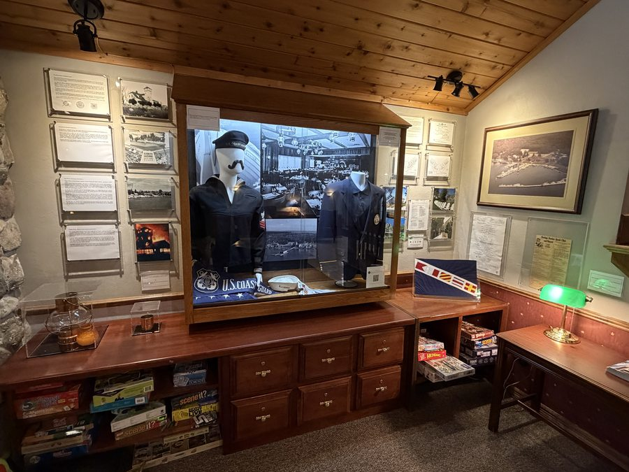

A Legacy on Baileys Harbor
Baileys Harbor Yacht Club Resort sits on 27 acres of prime Lake Michigan waterfront on the quiet side of Door County, Wisconsin. The property has a long connection to the sailing and boating traditions of the harbor that bears its name — one of the most protected natural anchorages on the western shore of Lake Michigan.
The resort grew from a community of lake lovers into what it is today: a collection of 66 individually owned condominium suites, each maintained to the resort’s high standards and made available to guests by the families who own them. That sense of personal pride — of homeowners sharing their spaces with visitors — gives the resort a warmth and character that chain hotels simply cannot replicate.
The Main Lodge, with its stone fireplace, front desk, and guest gathering spaces, has welcomed generations of families returning year after year. Many guests who first visited as children now bring their own families — a testament to the lasting impression Baileys Harbor makes on everyone who stays.

History & Maritime Display — Main Lodge
The Ridges Sanctuary
Adjoining the resort is The Ridges Sanctuary, one of Wisconsin’s most treasured nature preserves. This 1,600-acre sanctuary protects a rare series of ancient shoreline ridges and swales, home to 25 species of native orchids and over 500 species of plants. Guests have direct access to its trails and the quiet beauty that has made Baileys Harbor a destination unlike any other in Door County.
The resort’s location — between the harbor to the west and the sanctuary to the east — is what makes it truly special. It is, as guests have said for decades, a place that stays with you.

The Waterfront — Baileys Harbor, Door County
Come Experience It For Yourself